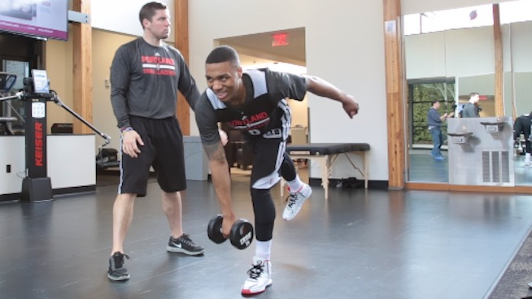

WARM UP
Before you start with conditioning exercises, you need to complete few warm up exercises to prepare your body for the strenuous part of the work out, loosen your joints and increase blood flow to your muscles. Warm up exercises will also limit the risk of injuries.

RUNNING
Next, let’s talk about some running drills that you can do to get in great shape for basketball. Check out few running drills below that can help you mimic what happens in a basketball game.

CARDIO
When people say they need to do cardio or conditioning, everyone immediately thinks of running. It is true that running is a popular way to get conditioning in, but it is not the only way. If you are looking for some conditioning drills with no running required, check out for more options.